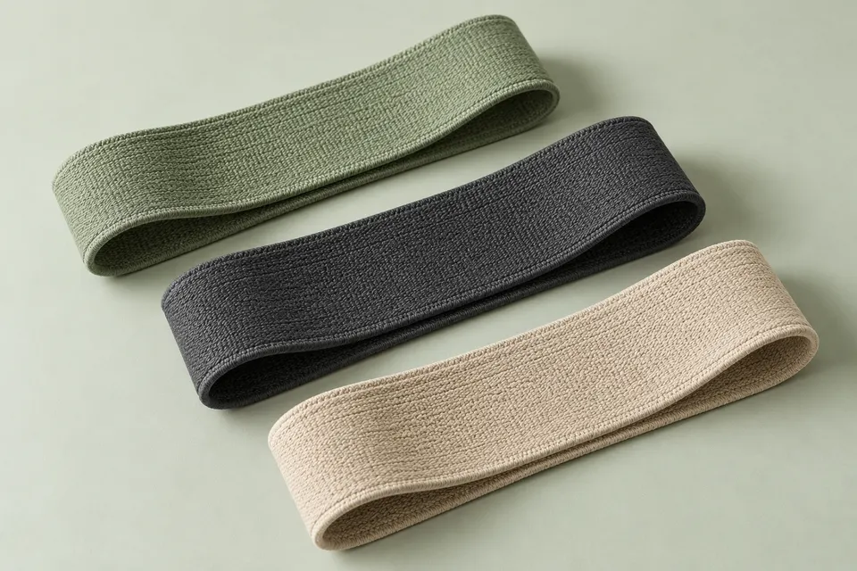
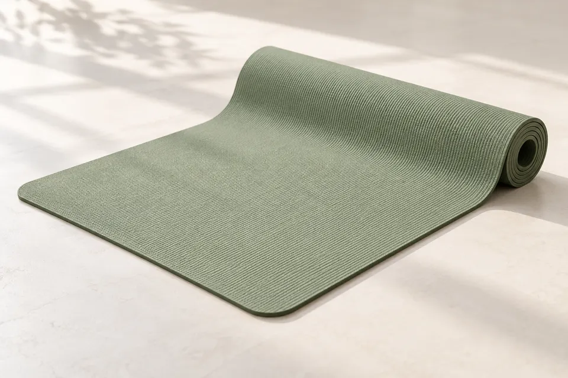
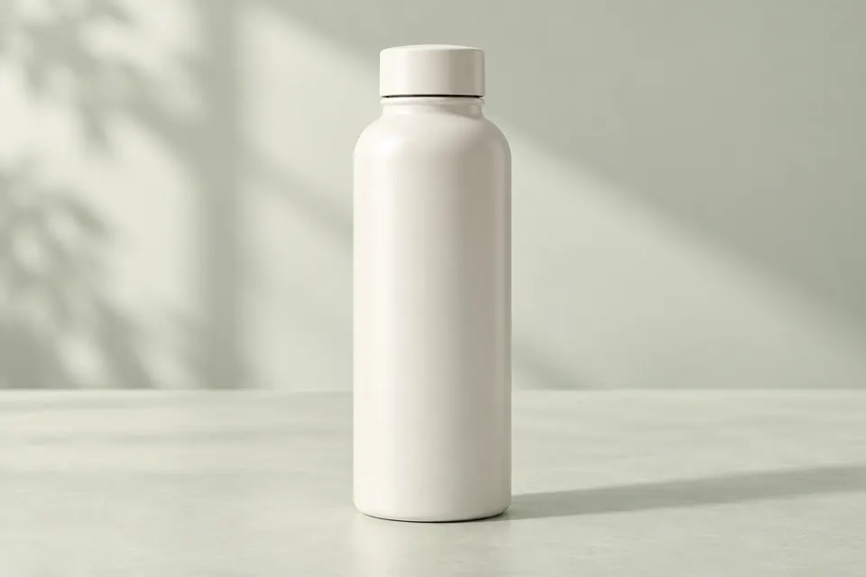
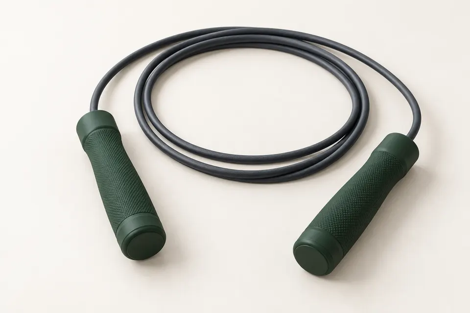

Para o treino
Kit de faixas elásticas
Um conjunto compacto de acessórios para levar na bolsa.
R$ 89Valor fictícioConhecer o produtoLink de afiliado demonstrativo
Lia Vale Movimento
Uma curadoria de acessórios com contexto: o que observar, para que serve e por que pode fazer sentido.
Explorar os produtosA curadoria
Produtos genéricos e valores fictícios. Conheça os detalhes de cada indicação antes de explorar um link.

Para o treino
Um conjunto compacto de acessórios para levar na bolsa.
R$ 89Valor fictícioConhecer o produtoLink de afiliado demonstrativo

Para o treino
Uma superfície prática para organizar seu espaço.
R$ 119Valor fictícioConhecer o produtoLink de afiliado demonstrativo

Para o dia a dia
Um acessório para acompanhar seus deslocamentos.
R$ 79Valor fictícioConhecer o produtoLink de afiliado demonstrativo

Para o treino
Um acessório compacto com regulagem demonstrativa.
R$ 59Valor fictícioConhecer o produtoLink de afiliado demonstrativo
4 produtos demonstrativos · Todos
O que guia uma escolha
A proposta desta curadoria apresenta características e contexto de uso, sem prometer resultados.
O que o acessório oferece e onde pode ser usado.
Material, dimensões e condições devem ser conferidos no produto real.
A identificação da afiliação acompanha a indicação.
Informações para você
Não. Eles abrem detalhes demonstrativos nesta página. Na personalização, o cliente poderá inserir seus links de afiliados e identificar cada parceria.
Não. São referências fictícias para apresentar a estrutura da vitrine.
Não. Nenhuma compra, pagamento, comissão ou coleta de dados é realizada.
Projeto demonstrativo da TS Digital
Organize seus produtos e links autorizados em um site personalizado, com apresentação clara e transparência comercial.
Uma opção para quem valoriza acessórios leves e fáceis de guardar. O uso depende de orientação adequada.
R$ 89 · Valor fictício
Link de afiliado demonstrativo. Nenhuma compra, pagamento ou comissão será realizada. No projeto de um cliente, este espaço pode apontar para um link autorizado.
Pode compor um espaço de movimento em casa. Material e espessura devem ser conferidos no produto real.
R$ 119 · Valor fictício
Link de afiliado demonstrativo. Nenhuma compra, pagamento ou comissão será realizada. No projeto de um cliente, este espaço pode apontar para um link autorizado.
Um objeto de uso cotidiano que cabe na mochila. Esta indicação é apenas uma demonstração de curadoria.
R$ 79 · Valor fictício
Link de afiliado demonstrativo. Nenhuma compra, pagamento ou comissão será realizada. No projeto de um cliente, este espaço pode apontar para um link autorizado.
A apresentação destaca portabilidade e características do produto, sem afirmar resultados de uso.
R$ 59 · Valor fictício
Link de afiliado demonstrativo. Nenhuma compra, pagamento ou comissão será realizada. No projeto de um cliente, este espaço pode apontar para um link autorizado.